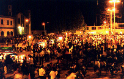
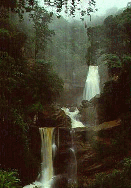
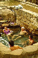
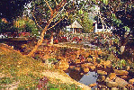
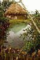
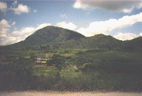
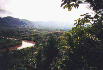
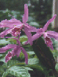
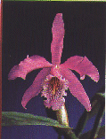
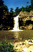

Cortesía de Adrián Mendoza Ocampo
Fotos: L M - Fotos, Moyobamba y FOPTUR
|
 Plaza de Armas |
Es una de las bellas puntas, un balcón hermoso, donde el observador encuentra una verdadera mezcla de un paisaje natural y cultural, experimentando el mayor al poder captar a la naturaleza en forma desnuda.En la parte baja se encuentra el puerto de Tahuishco, principal puerto fluvial de la ciudad, lugar donde se comercializa cantidad de productos agropecuarios en ferias sabatinas. El río Mayo causante de este puerto, permite la navegación en canoas, balsas y botemotores.
Denominado el verdadero Miramayo, lugar turístico desde donde se puede apreciar un paradisíaco panorama de inmensa vegetación, el serpenteante río Mayo y un amplio horizonte. Está ubicada en el barrio de Zaragoza.
Es otro de los lugares fascinantes que encierra tradición y folklore. Igualmente desde este lugar se aprecia la serpenteante Carretera Marginal de la Selva, igualmente los grandiosos cerros de San Mateo y Oromina y un gran panorama que incita a inspiración. Está ubicada en el barrio de Calvario.
Es una punta de hermoso paisaje que paulatinamente está siendo acondicionada para fines turísticos. Está ubicada en el barrio de Lluyllucucha.
Aparte de estas puntas, tenemos otras de gran importancia y belleza, como las puntas de Cococho, de Huastilla, Shango, Azungue, Lache, etc. Todas nos ofrecen pintorescos panoramas.
|
 Sus aguas caen desde 120 mt. de altura, en tres etapas, a consecuencia de un desnivel del terreno, presentando colores exóticos, desde un color marrón hasta los colores del arco Iris por acción del sol sobre las aguas. Se llega a ella a través de dos accesos:
|

Se ubica a 5 km. de la ciudad de Moyobamba, en la falda del cerro San Mateo. La temperatura del agua oscila entre los 40 0C. Se le reconece cualidades terapéuticas, especialmente para enfermedades reumáticas.

Se llega a este lugar tomando los servicios permanentes de taxi en autos o motocar y también practicando una placentera caminata en todo su recorrido.
|
 Está ubicada a solo 6 km. de Moyobamba, en las faldas del cerro Oromina. Tiene afloramientos sulfurosos provenientes del subsuelo. El azufre se puede notar precipitados en finas piedrecitas y pegadas a las hojas de las plantas.Estas aguas sulfurosas son recomendables para el tratamiento de algunas enfermedades de la piel y el estómago en pequeñas dosis como laxante. A 200 mts. de las pozas se encuentra la cascada de Asnacyacu, una caída de agua de aproximadamente 8 mts. Además de las pozas de agua sulfurosa, también cuenta con chorros de agua pura y fría. Todos estos ambientes han sido acondicionados convenientemente a fin de brindar comodidad a toda persona que lo visite. Se llega a ella a través de una vía de acceso muy bien conservada - lo que facilita su visita. |

Desde la parte plana de su cumbre se puede divisar las edificaciones de las ciudades de Moyobamba y Rioja y de las poblaciones de Calzada, Habana, Soritor, Yantaló y otros.
|
 El Río Mayo es utilizado como vía de gran importancia para el desarrollo de los pueblos del Alto Mayo. El puerto principal sobre este río es Tahuishco, a tan sólo medio kilómetro del casco urbano de la ciudad. Ambas márgenes son de enorme potencial agrícola y ganadero.El Río Mayo es apropiado para la práctica del canotaje (en los rápidos de Marona), o simplemente para disfrutar de un paseo realizando faenas de pesca con anzuelo o redes. |


La capital de la Región San Martín, con mucha razón es llamada Ciudad de las Orquídeas, pues tiene el privilegio de haber sido agraciada por la naturaleza al concederle muchas especies de las preciadas orquídeas que representan la belleza natural selvaje y convierten Moyobamba en la ciudad jardín del País; pues la Catleya Rex, conocida en nuestro medio como la Golondrinasisa. Es la más bella y la más rara de estas plantas y sin duda la más cotisada.Para que el visitante o turista pueda apreciar la belleza de estas plantas, se cuenta en nuestra ciudad con lugares donde se exponen y comercializan, tales como viveros, diversos hoteles y hospedajes y domicilios familiares.
|
 Bella vista natural ubicada en un ambiente ecológico a 45 km. de Moyobamba y cercano al pueblo Lahuarpía - lugar visitado por propios y extraños con la finalidad de gozar de un momento de relax en contacto con la naturaleza. Es un lugar donde aparte de gozar de un maravilloso paisaje, nos ofrece su piscina natural para practicar la natación y el buceo.Se llega al lugar utilizando los servicios de taxi en autos, camionetas y combis. |